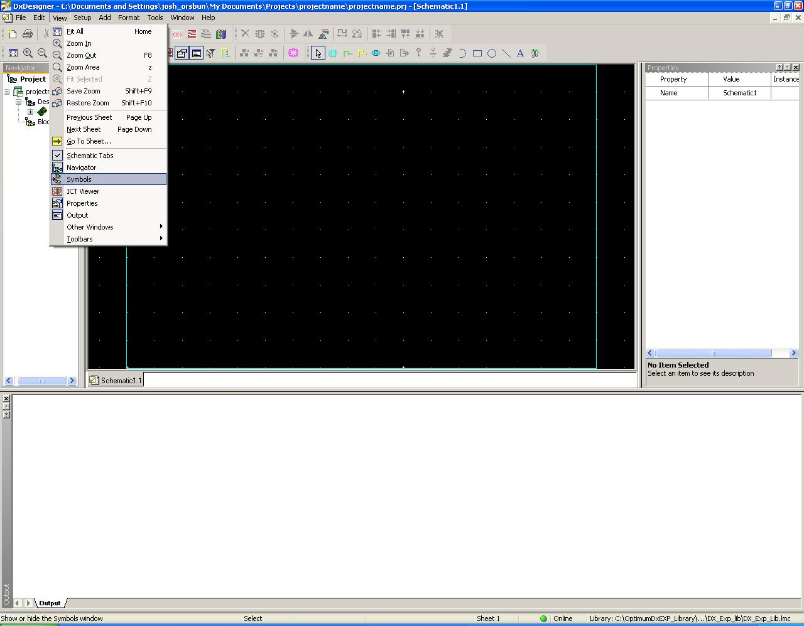
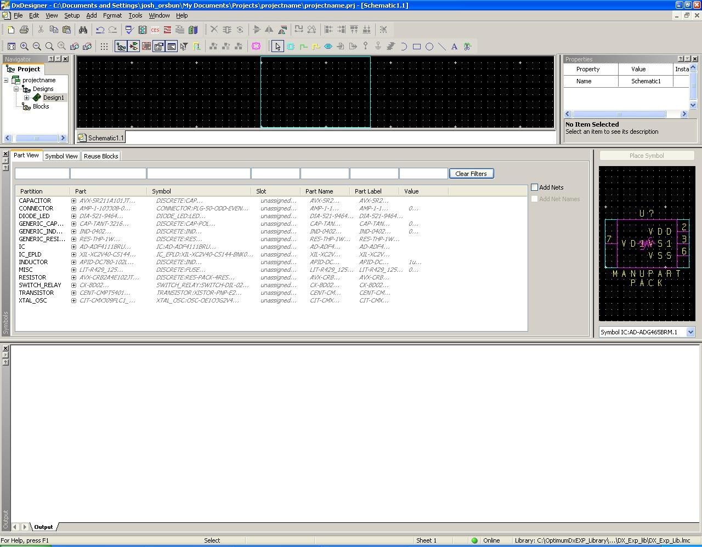
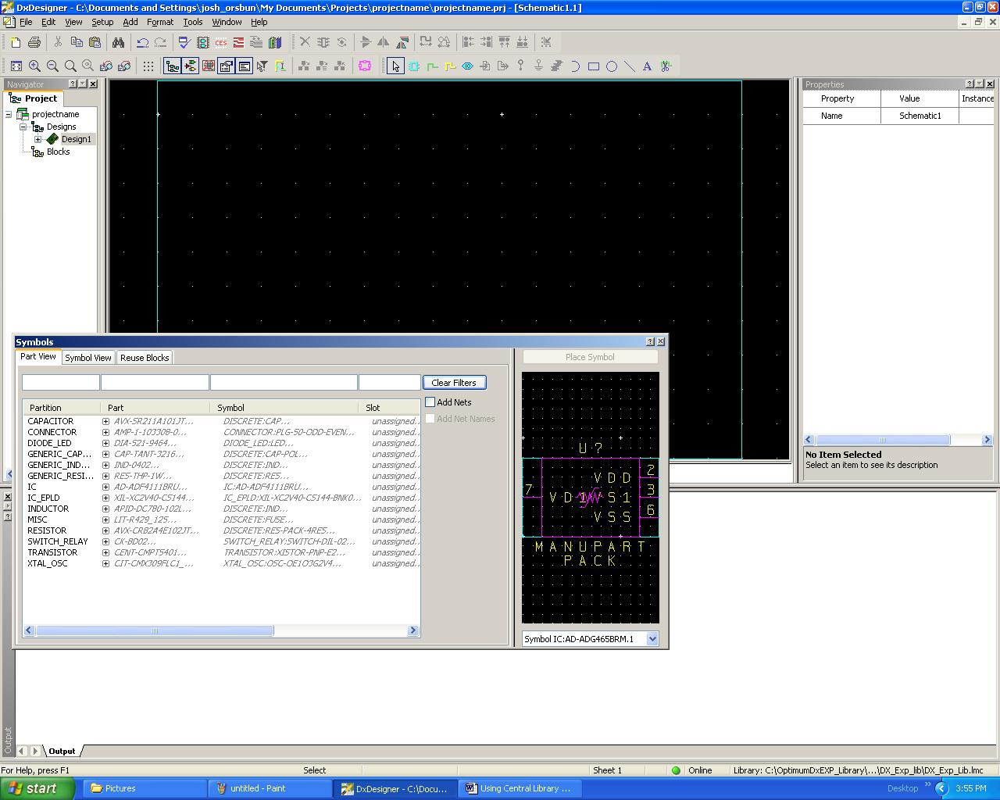
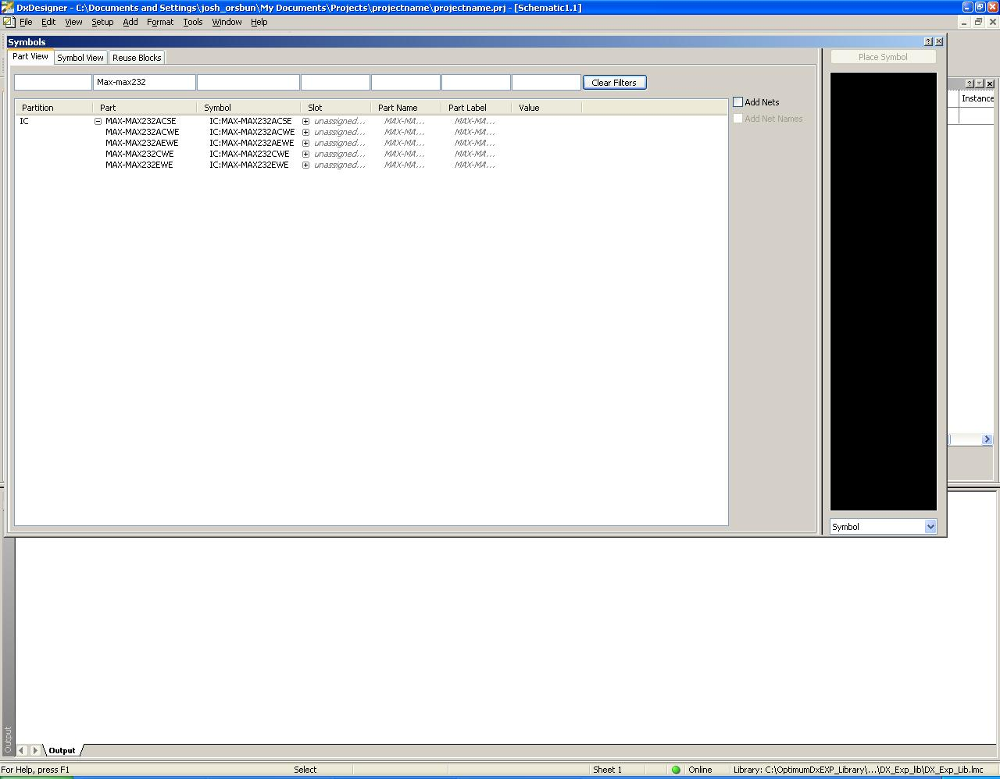

Getting
Started: Using the Central Library
a.k.a. How to add Parts, How to add Devices
With your project open and you are eager to start placing and connecting your devices, you will first need to learn how to access them.
By clicking on the View menu, then by clicking on Symbols you will now be able to access your parts in the Central Library.
Note that the small picture to the left of the word Symbols in the View menu is the same symbol you will be able click on in the toolbar for the same effect.

(1-SymbolLib.JPG)
A new docked window will appear. If the new docked window bothers you as much as it did me, you may click on the small dividers between the docked windows to make them larger or smaller. In addition you may right click on the new window and undock it so that it will be a free floating window. The two mentioned concepts are shown below the first picture showing the docked window setup, and then the second picture showing then undocked window setup
Either way it is your personal preference

(2-dockedwindow.JPG)

(3-undockedwindow.JPG)
Now to move our focus back to the Library itself ...
There are three main tabs to this library: "Part View", "Symbol View", and "Reuse Blocks"
Considering you will be using this schematic as an easier way to make the connections than by hand-wiring your chips, you will want to use the "Part View" tab. Another good reason for using the "Part View" tab is that you will already know the part numbers of the devices you will be using and you will be able to use filters to find them easily.
The filter system is broken into sections, where you may filter out partitions, part, symbol, etc.
To effectively use the filtering system you must follow the naming scheme in the ODA library. Under this naming scheme, each part in the library uses the following format:
(abbreviated company name)-(part number)Example: If you wanted to find a part made by Maxim and if you knew that the manufacturer's part order number for started with "MAX232", you would use the following:
MAX-MAX232

(4-filter.JPG)
In order to place one of those parts into your schematic, merely left-clicking on the part that you wish to place and then clicking on the "Place Symbol" button will attach the Symbol to your mouse pointer. After it is attached you may left click as many times as you desire on the schematic to place as many part instances as you like. Right-clicking will stop placing that particular symbol.
Do not get confused with the terminology. A "Part" is composed of a "Symbol" and a "Cell". Symbols are used for schematics drawn in DxDesigner, and the Cells are used for printed circuit boards layed out in Expedition PCB. You must use Parts to be able to have your DxDesigner schematic communicate properly with Expedition PCB.